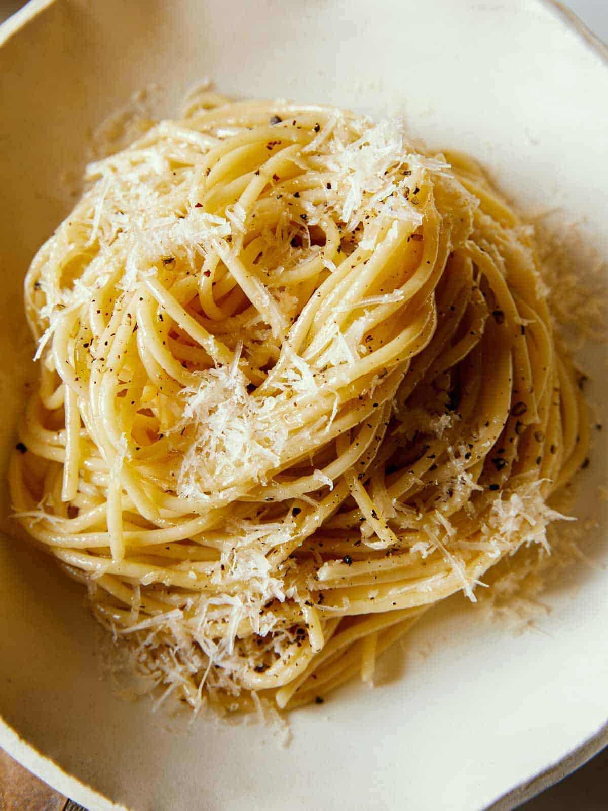

Cacio e Pepe
Home

Description
Cacio e Pepe (pronounced ca-cho ee pepe) is a Roman pasta dish that translates to “cheese and pepper”. The simple dish consists of spaghetti, black pepper and Pecorino Romano.
To make Cacio e Pepe you will need the following ingredients:
Ingredients
- Fresh Pasta (Spaghetti, Bucatini, or Fettucini will work)
- Grated Pecorino Romano cheese
- Fresh ground Black Pepper
Steps
- Boil pot of water
- Cook pasta for 10 minutes until al dente
- Put pasta into a large pan, slowly mix in cheese and black pepper
- Add a small amount of pasta water
- Mix until creamy